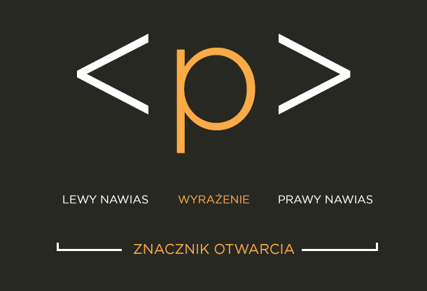

Work in progress, content will be improved every day : )


Ok, drodzy Wszyscy, plan jest taki - robię stronę, na której będę mógł zaprezentować siebie, jak i swoje umiejętności, na teraz w postaci cheat sheetów (tak bardziej dla siebie, ale kto wie, może w dalszym etapie będzie to dobre miejsce dla innych osób, które rozpoczną swoją przygodę z programowaniem), następnie drobnych aplikacji. W dalszych etapach projekt zacznie nabierać konkretnych kształtów (mam kilka pomysłów), podzięlę go na etapy, może nawet na mniejsze projekty.
!Zawartość strony bazuje na kursach i poradnikach, które miałem okazję odbyć lub przeklikać. Zdarzy mi się wykorzystać istniejące elementy graficzne z innych stron, także gdybym drogi autorze naruszył jakieś prawa autorskie, daj proszę znać i rozwiążemy ten problem, nie chcę po prostu tworzyć koła od początku : )!
HTML Cheat Sheet
HTML - Hypertext Markup Language, hipertekstowy język znaczników. Jest to język komputerowy opisujący strony internetowe. Obecnie standardem w użyciu jest wersja piąta języka (HTML5)
Hipertekst to tekst z hiperłączami/linkami do innych stron
Znaczniki to wyrażenia zamieszczane w ostrych nawiasach <>


<!DOCTYPE html> - jest to informacja dla przeglądarki o typie dokumentu
< html >